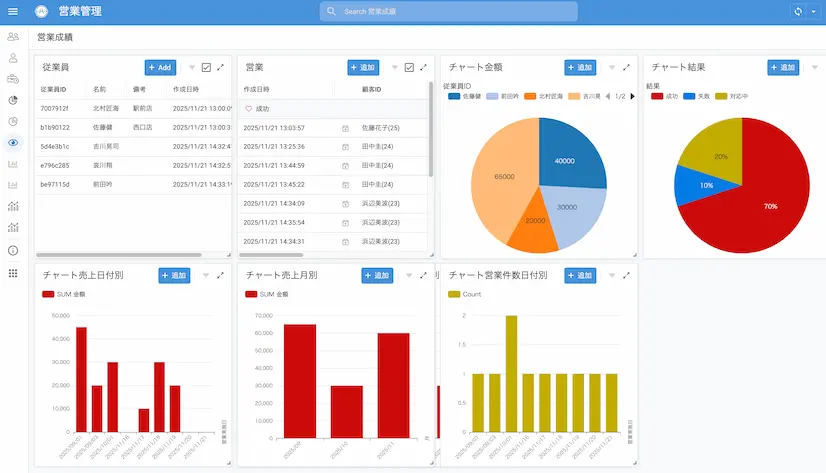

AppSheet開発
AppSheetとは
Googleが提供するノーコード開発プラットフォームです。Google Workspaceのデータをもとに、業務アプリが作成できます。
活用イメージ
AppSheetで蓄積されたデータは、ただ保存するだけではもったいない。
集計・分析・可視化することで、経営判断や業務改善に活かせる「使えるデータ」に変わります。
例）営業管理アプリのダッシュボードで、リアルタイムに進捗や成果を可視化

Googleが提供するノーコード開発プラットフォームです。Google Workspaceのデータをもとに、業務アプリが作成できます。
AppSheetで蓄積されたデータは、ただ保存するだけではもったいない。
集計・分析・可視化することで、経営判断や業務改善に活かせる「使えるデータ」に変わります。
例）営業管理アプリのダッシュボードで、リアルタイムに進捗や成果を可視化